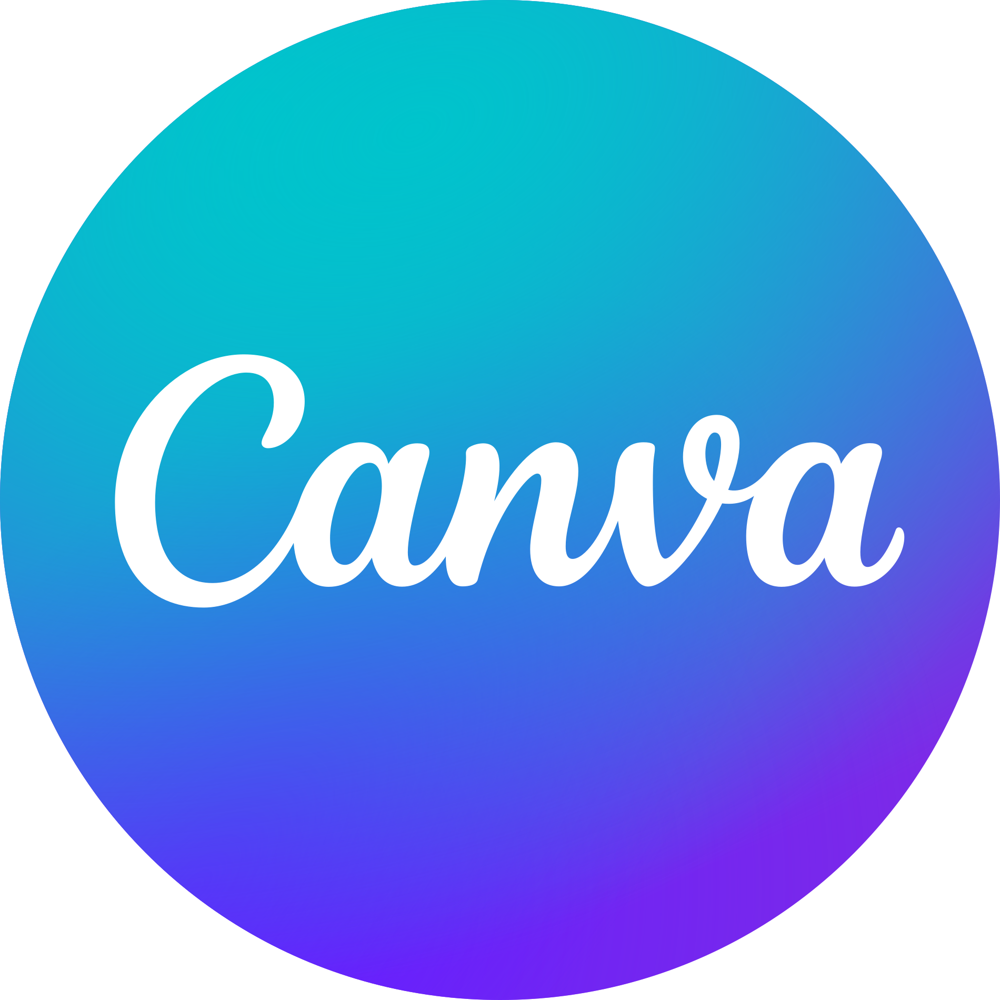

Portfolio de Christopher TRAN
En Recherche de stage

< Christopher TRAN >
En Recherche de stage
Etudiant en troisième année de BUT MMI
Etudiant en troisième année de BUT Métiers du Multimédia et de l'Internet à l'IUT Meaux.
J’ai fait un BAC STI2D au lycée MLK à Bussy-Saint-Georges, où j’ai découvert mon intérêt pour la technologie et l’innovation. En 2021, j’ai commencé un BUT Informatique, mais cela ne me plaisait pas car c'était trop axé sur le développement. Après deux mois, j’ai arrêté et pris une année sabbatique, durant laquelle j’ai travaillé chez Auchan. Cette expérience m’a appris la rigueur, le travail en équipe et la gestion du temps.
Aujourd’hui, je suis en 3ᵉ année de BUT MMI, un domaine qui me correspond mieux, avec du multimédia, de la communication et du web.

Logiciels :
 |
 |
 |
 |
 |
 |
 |

|  |
 |
J'ai eu différentes expériences professionnelles dans ma vie qui m'ont ouvertes au monde du travail.
J'ai effectué mon stage d'observation de 3ème à Intermarché, ce qui m'a permis de découvrir le monde professionnel.
Depuis décembre 2021, j'ai également un contrat étudiant en tant qu'équipier polyvalent chez Auchan. Ce travail me procure à la fois un revenu financier et une opportunité d'épanouissement personnel, offrant ainsi une stabilité économique et une satisfaction dans ma vie professionnelle.
Lors de ma première et deuxième année, j’ai effectué mes stages en tant que Community Manager au sein de la boulangerie Le Moulin de Chessy.
Pour rester à jour !
Voici ma veille sur le multimédia, le web et la communication digitale. Cela me permet de suivre les tendances, d’apprendre de nouvelles techniques, de m’inspirer pour mes projets et de toujours être à jour.
Voici quelques liens :
Design & UX/UIx
Behance – Un site d’inspiration pour les créatifs
Dribbble – Un site où des designers partageant leurs projets
Ensemble des travaux et projets realisé durant mes années d'études.
Ensemble des travaux et projets realisé durant ma vie.
Bonjour !
Étudiant en MMI à la recherche d'un stage de fin d’études !
Actuellement en troisième année de BUT Métiers du Multimédia et de l'Internet, je suis à la recherche d'un stage pratique de fin d’études d'une durée de 4 mois, à compter du mois d’avril.
N'hésitez pas à me contacter via LinkedIn pour en savoir plus sur mon parcours et mes motivations. Je suis disponible pour un entretien afin de discuter de la manière dont je pourrais contribuer à vos projets !
Vous trouverez ci-joint mon CV pour plus de détails sur mon parcours et mes expériences.
Merci !